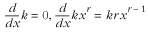
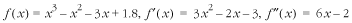

13.7 Description of the Solution of
Equations
One of the most fundamental problems in
scientific computing is solving equations of the form f (x)
= 0. This is often referred to as finding the roots,
or zeros, of f (x).
Here, we are interested in the real
roots of f (x), as opposed to any complex roots
it might have. Specifically, we will focus on finding real
roots when f (x) is a polynomial.
13.7.1 Finding Roots with Newton's
Method
Although factoring
and applying formulas are simple ways to determine the roots
of polynomial equations, a great majority of the time
polynomials are of a large enough degree and sufficiently
complicated that we must turn to some method of approximation.
One of the best approaches is Newton's
method. Fundamentally, Newton's method looks for a root
of f (x) by moving closer and closer to it
through a series of iterations. We begin by choosing an
initial value x = x0 that we think is near
the root we are interested in. Then, we iterate using the
formula:
until xi
+ 1 is a satisfactory approximation. In this formula,
f (x) is the polynomial for which we are
trying to find a root, and f '
(x) is the derivative of f (x).
13.7.2 Computing the Derivative of
a Polynomial
The derivative of a
function is fundamental to calculus and can be described in
many ways. For now, let's simply look at a formulaic
description, specifically for polynomials. To compute the
derivative of a polynomial, we apply to each of its terms one
of two formulas:

where k is a
constant, r is a rational
number, and x is an unknown.
The symbol d /dx means "derivative of," where x is the variable in the polynomial.
For each term that is a constant, we apply the first formula;
otherwise, we apply the second. For example, suppose we have
the function:
In order to compute f
' (x), the derivative of
f (x), we apply the second formula to
the first three terms of the polynomial, and the first formula
to the last term, as follows:
Sometimes it is necessary to compute
higher-order derivatives as well, which are derivatives of
derivatives. For example, the second derivative of f (x),
written f '' (x), is the derivative of f ' (x). Similarly, the third derivative
of f (x), written f
''' (x), is the
derivative of f '' (x), and so forth. Thus, to compute
the second derivative of f
(x) in the previous equation,
we compute the derivative of f '
(x), as follows:
13.7.3 Understanding the First and
Second Derivative
Now let's look at what derivatives really
mean. To use Newton's method properly, it is important to
understand the meaning of the first and second derivative in
particular.
The value of the first derivative of f (x)
at some point x = x0 indicates the slope of
f (x) at point x0; that is, whether f (x)
is increasing (sloping upward from left to right) or
decreasing (sloping downward). If the value of the derivative
is positive, f (x) is increasing; if the value is
negative, f (x) is decreasing; if the value is
zero, f (x) is neither increasing nor
decreasing. The magnitude of the value indicates how fast
f (x) is increasing or decreasing. For
example, Figure
13.6, example a, depicts a function whose value increases
within the shaded regions; thus, these are the regions where
the first derivative is positive. The plot of the first
derivative crosses the x-axis
at the points where the slope of f (x)
changes sign.
The value of the second derivative of f (x)
at some point x = x0 indicates the concavity
of f (x) at point x0, that is, whether the
function is opening upward or downward. The magnitude of the
value indicates how extreme the concavity is. In Figures 13-6a
and 13-6c, the dotted line indicates the point at which the
concavity of the function changes sign. This is the point at
which the plot of the second derivative crosses the x-axis.
Another way to think of the value of the
derivative of f (x) at some point x = c
is as the slope of the line tangent to f (x)
at c, expressed in point-slope
form. The point-slope form of a line is:
Thus, if f
(x) = x
3 - x
2 - 3x + 1.8 as shown in
Figure
13.6, example a, the equation of the line tangent to f (x)
at c = 1.5 as can be determined
as follows. Figure
13.6, example d, is a plot of this line along with f (x).
13.7.4 Selecting an Initial Point
for Newton's Method
Now that we understand a little
about derivatives, let's return to Newton's method. Paramount
to Newton's method is the proper selection of an initial
iteration point x0.
In order for Newton's method to converge to the root we are
looking for, the initial iteration point must be "near enough"
and on the correct side of the root we are seeking. There are
two rules that must be followed to achieve this:
-
Determine an interval [a, b
] for x0 where
one and only one root exists.
To do this, choose a and
b so that the signs of f (a) and f (b) are not the same and f '
(x) does not change sign. If
f (a) and f
(b) have different
signs, the interval contains at
least one root. If the sign of f ' (x) does not change on [a, b
], the interval contains only
one root because the function can only increase or
decrease on the interval.
-
Choose either x0 = a or x0 = b so that f
(x0) has
the same sign as f '' (x) on the interval [a, b
]. This also implies that f ''
(x) does not change
sign on the interval. Recall that the second derivative of
f (x) is an indication of concavity. If f '' (x) does not change sign and
x0 is chosen so
that f (x0) has the same sign as
f '' (x), each successive iteration of
Newton's method will converge closer to the root on the
interval [a, b ] (see Figure
13.7).
In each of the four parts of Figure
13.7, f (x) is shown as a heavy line, and
a and b are shown as vertical dotted lines.
If f (a) matches the criteria just given,
iteration begins at a and
tangent lines slope from a
toward the root to which we would like to converge. If f (b)
matches the criteria above, iteration begins at b and tangent lines slope from b toward the root to which we would
like to converge.

13.7.5 How Newton's Method
Works
As an example, suppose we would like to find
the roots of f (x)
= x 3 - x2 - 3x + 1.8. Figure
13-8 illustrates that this function appears to have three
roots: one on the interval [-2, -1], another on the interval
[0, -1], and a third on the interval [2, 3]. Once we have an
idea of the number and location of a function's roots, we test
each interval against the rules for selecting an initial
iteration point. To do this, we need to know the
following:

Using this information, we see that the
interval [-2, -1] satisfies the first rule because f (-2) = -4.2 and f (-1) = 2.8, and f ' (x) does not change sign on the
interval: it is always positive. Considering this, we know
there is, in fact, one and only one root on the interval [-2,
-1]. To satisfy the second rule, we see that f '' (x) does not change sign on the
interval: it is negative. We select x0 = -2 as the initial
iteration point since f (-2) =
-4.2 is also negative. Figure
13.8 illustrates calculating the root on this interval to
within 0.0001 of its actual value. We end up iterating five
times to obtain this approximation.
Moving to the root on the interval [0, 1], we
see that the first rule is satisfied just as for the previous
interval. However, the sign of f
'' (x) is not constant
on this interval; therefore, the interval does not satisfy the
second rule. Suspecting that the root is closer to 1 than 0,
we try the interval [0.5, 1] next, which corrects the problem.
The first rule is satisfied because f (0.5) = 0.175 and f (1) = -1.2, and f ' (x) does not change sign on the
interval: it is negative. To complete the second rule, we
select x0 = 0.5
since f (0.5) = 0.175 is
positive and has the same sign as f ''
(x) over the interval
[0.5, 1]. Figure
13.8 illustrates calculating the root on this interval to
within 0.0001 of its actual value. We end up iterating four
times to obtain this approximation. Calculating the third root
proceeds in a similar manner. |